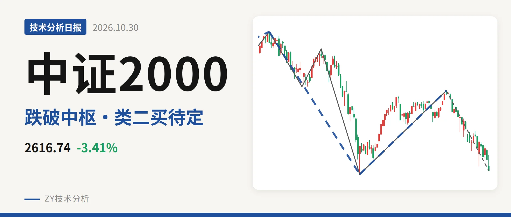
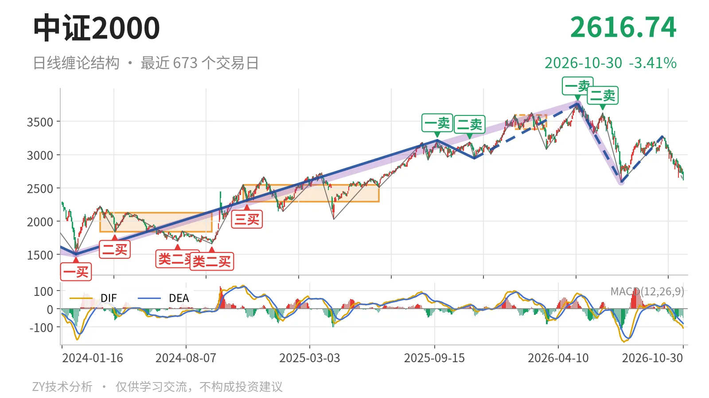
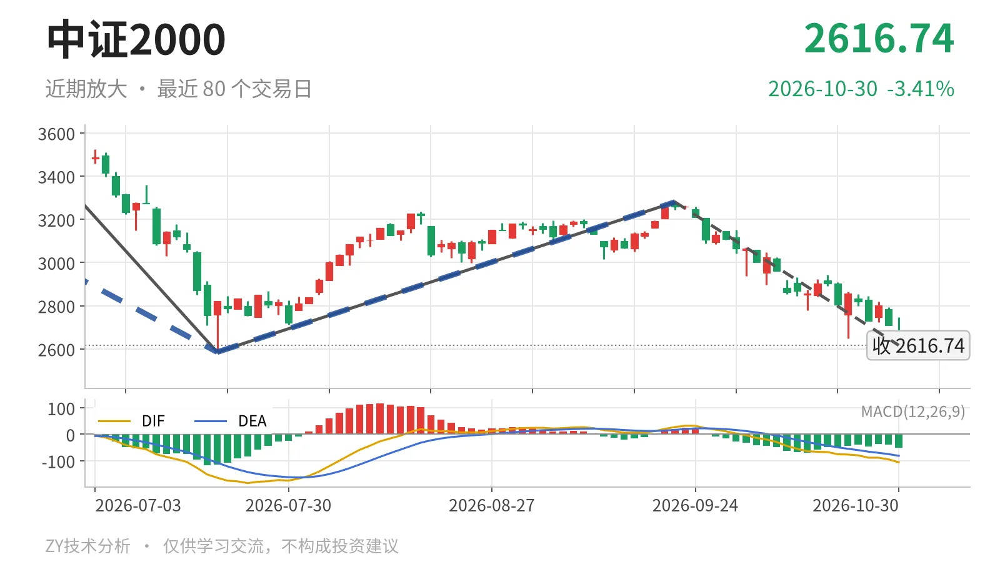

中证2000｜逼近2585类二买，3381中枢失守

最近日线中枢 3381.36—3593.19点，收盘位于中枢之下
一句话：仍在5月14日以来下跌段，跌破最近日线笔中枢，暂看2585点类二买。
📉 走势结构：5月14日以来下跌段未结束，7月至9月只是反弹一笔
中证2000日线仍处在5月14日以来的下跌段里。5月14日至7月21日的下跌线段从3768.08点跌到2585.35点，跌31.4%，这段还没结束；7月21日至9月22日的回升从2585.35点到3280.29点，只是日线一笔，不构成线段，性质上就是反弹。9月22日以来的下跌笔又把价格压到2616.74点，反弹没有改变线段方向。更大级别看，5月14日开始的下跌走势也还在延续。

🧭 中枢与位置：跌破3381点下沿，中枢处高位下移
最新价2616.74点已经跌破最近日线笔中枢。该中枢是1月26日至3月23日的3381.36—3593.19点，中轴3487.28点，尚未完成。收盘低于下沿约22.6%，属于向下大幅离开中枢。下方2024年11月12日至2025年6月23日的中枢在2293.12—2547.90点，现价还在其上沿2548点上方；若失守2548点一带，中枢下移会更明确。最近中枢从2420点附近上移到3487点附近后，价格又摔回下沿之下。
📌 买卖点：5月14日一卖后二卖低，7月21日类二买待定
最近的买卖点是7月21日的类二买2585.35点，属于暂定状态。5月14日一卖3768.08点、6月23日二卖3626.48点，卖点一个比一个低，高位结构已经转折。7月21日类二买所在的5月14日至7月21日下跌线段还没结束，因此它会随线段延续而变化，不是定案。最新价2616.74点距2585.35点约31点，尚未跌破这个结构点。

⚡ 背驰：当前下跌笔绿柱扩但DIF低点抬高，尚未新低
日线笔的下跌力度还没出现“新低不新弱”。比较两段同向下跌笔：6月23日至7月21日下跌笔绿柱面积810，DIF低点-164.2；9月22日以来的下跌笔还没结束，绿柱面积829，DIF低点-106.0。面积略超前段，但DIF低点未同步下移，价格也没跌破2585.35点，所以当前是价格逼近前低而非底背驰。若跌破2585点而DIF低点仍高于-164.2，才算进入日线笔底背驰条件。
🔍 关键位置观察：先看2585点是否破，反抽看3280点和3381点
结构上当前偏弱。收盘低于最近日线笔中枢下沿22.6%，且9月22日以来的下跌笔还在延续，没有回到中枢内部。下方2585点附近是7月21日类二买，日线一旦跌破该位且DIF低点继续下移，则5月14日以来下跌段延续；若跌破后DIF低点不破-164.2，则出现日线笔底背驰。上方反抽先看3280点附近，再看3381点附近的中枢下沿；反抽若回不到3381点上方，结构上构成三卖。整体偏弱，强弱分水在2585点附近。
⚠️ 本文为基于公开行情数据的缠论技术结构记录，由程序自动计算并生成，仅供学习交流，不构成任何投资建议。市场有风险，投资需谨慎。